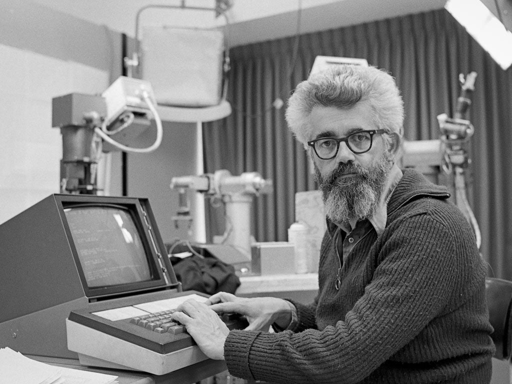
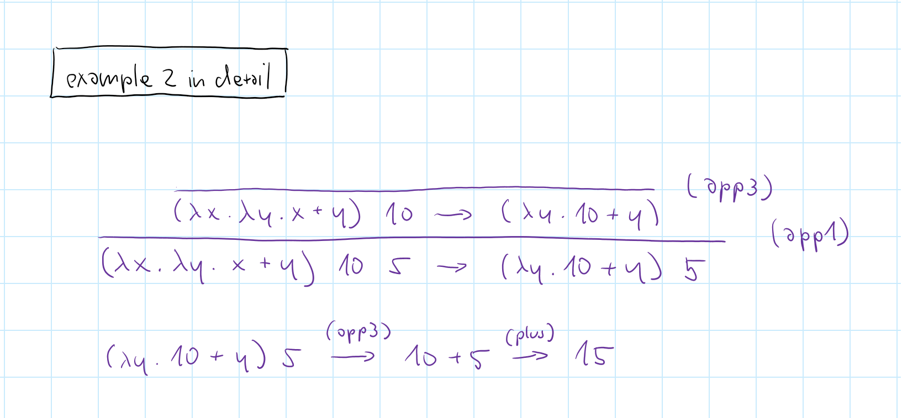
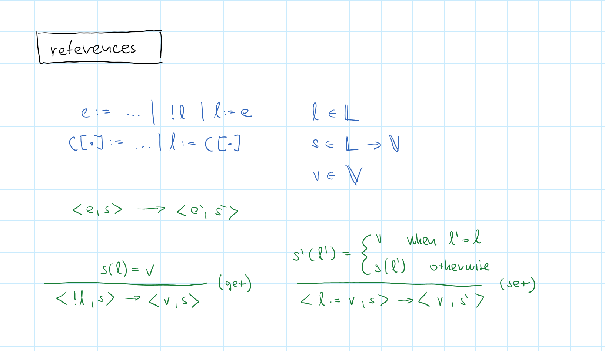
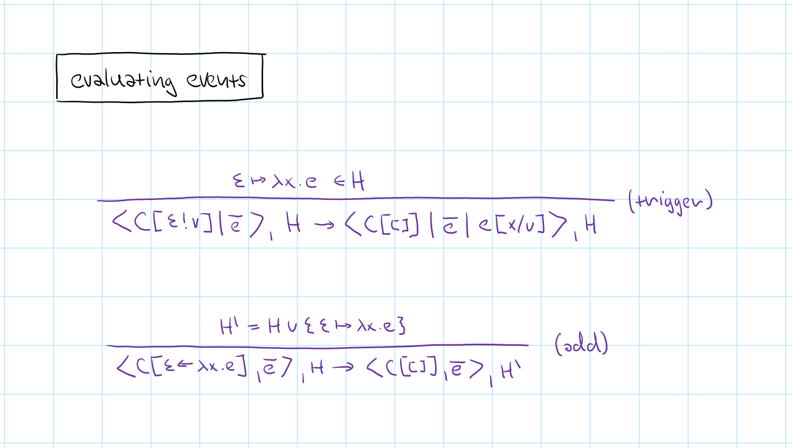

NPRG075
Formal models of programming
Tomáš Petříček, 309 (3rd floor)
petricek@d3s.mff.cuni.cz
https://tomasp.net | @tomaspetricek
Lectures: Monday 12:20, S7
https://d3s.mff.cuni.cz/teaching/nprg075

History
Programming as mathematics

Programming in the late 1940s
ENIAC programmed by plugging wires and flipping switches
"The ENIAC was a son-of-a-bitch to program" - Jean (Jennings) Bartik
Mathematical science of computation
John McCarthy (1962)
In a mathematical science, it is possible to deduce from the basic assumptions, the important properties of the entities treated by the science.
What we want to answer
- Does transformation preserve meaning?
- Does translation procedure correctly translate?
- Do two programs compute the same function?

Microalgol (1964)
Syntax and semantics of trivial Algol subset
\(micro(\pi,\xi)\) gives the final state of a program \(\pi\) run in a state \(\xi\)
"Description of the state of an Algol computation will clarify (..) compiler design"
Formal models
What are they good for?
- Make sense of tricky language features
- Prove properties of specific programs
- Prove properties of the language
- Make sure type system actually prevents bugs!

The definition of Standard ML (1990s)
Operational semantics
and type system for a complete language
Even language this simple had murky parts!
// Function: 'a -> 'a list
let callLogger =
// List: 'a list
let mutable log = []
fun x ->
log <- x :: log
log
// Can we call this with:
callLogger 10
callLogger "hi"
Generalization and value restriction
ML makes top-level definitions polymorphic
Allowing that for values is unsound!
Soundness

Surely, we know better?
- Are such problems in programming languages used today?
- tinyurl.com/nprg075-unsound
Unexpected interactions!
- Many Java extensions formalized
- Formalizations with soundness proofs!
- This is interaction between multiple features...
Semantics
Formal language definitions
Language semantics types
-
Axiomatic semantics
Define rules satisfied by individual commands -
Denotational semantics
Assign mathematical entity to each program -
Big-step operational semantics
Describe how terms reduce to values -
Small-step operational semantics
Evaluation as gradual rewriting of terms
Language semantics types

Language semantics types


Why small-step?
Easier to write than axiomatic or denotational
But harder to use for program equivalence
Good textbook and popular in PL research community
Works for programs that do not terminate
Semantics
Definition of an ML subset
Demo
Functions and numbers in F#
Expressions and evaluation

Evaluation rules

Functions and numbers

Functions and currying

Simplifying the rules

Conditionals and stuck state

Adding references

What did we learn?
Interesting aspects
- Evaluation order of sub-expressions
- Laziness of conditional expressions
- What needs to be in the state
Interesting things left out
- Data structures: records, unions, lists
- Language features: recursion, exceptions
- Hard things: Concurrency, input and output
ReactiveX
Programming with observables
Functional reactive programming

Classic functional style
- Functional reactive animations (1990s)
- Composing behaviours and events
- Revised in the Elm programming style
Observables and events
- Events that occur and produce values
- Mouse moves, server notifications, user inputs, ...
- Transformed using a range of operators
Functional reactive programming

Reactive animations (Elliott, 1997)
followMouseAndDelay u =
follow `over` later 1 follow
where
follow = move (mouseMotion u) jake
How does it work
mouseMotionrepresents current mouse positionlaterdelays time by X secondsoveroverlays multiple animations

Reactive eXtensions
Events represented by Observable<T>
Produces values when something happen
Operators turn one or more observables into a new one
Demo
Programming with RxJS
Semantics
Formalizing observables
Minimal language with events

Demo
Lists and sequencing in F#
Modelling concurrency

Triggering events

Lists, sequencing and steps

Rules for event handlers

Events calculus

Focus on what matters
- Lists, numbers and events only
- No functions or recursion!
- Probably still Turing-complete
What did we learn
- Sequence of concurrent expressions
- Selection of expression to be run
- Scheduling when event is triggered
Alternative rules

Conclusions
Formal models

Formal models
Useful design guide and for making formal claims
Explains core ideas of a system in a succinct way
The danger is producing languages that look
well on paper!
Language semantics types
-
Lambda calculus
Logic (1930s) but used for PL semantics (1960s+) -
Pi calculus, CCS and CSP
Models of concurrent systems (1980s-90s) -
Join calculus
Distributed asynchronous programming (1990s) -
Programming language theory
Memory regions, effects and coeffects, locks, etc.
Reading

Null safety in Dart
- Avoiding
nulldereferencing with types - Available at: https://dart.dev/null-safety/understanding-null-safety
Why read this
- Simple useful type system feature!
- Good discussion on soundness
- More languages have this: Swift, Rust, C#, TypeScript
Conclusions
Formal models of programming
- Programming language theory, Part I
- Evaluation over syntactic structures
- Better for small and stateless systems
Tomáš Petříček, 309 (3rd floor)
petricek@d3s.mff.cuni.cz
https://tomasp.net | @tomaspetricek
https://d3s.mff.cuni.cz/teaching/nprg075
References (1/2)
Semantics
- Krishnaswami, N. (2021). Semantics of Programming Languages
- Pierce, B. (2002). Types and Programming Languages . MIT
- Pierce, B (ed.) (2004). Advanced Topics in Types and Programming Languages . MIT
History
- Chruch, A. (1941). The Calculi Of Lambda Conversion. Princeton
- McCarthy, J. (1964). A Formal Description of a Subset of ALGOL
- McCarthy, J. (1963). Towards a Mathematical Science of Computation
- Milner, R. et al. (1997). The Definition of Standard ML. MIT
References (2/2)
Reactive
- Elliott, C. (1998). Composing Reactive Animations . MSR
- RxJS Primer - Learn RxJS. Online
- Wan, Z., Hudak, P. (2000). Functional reactive programming from first principles, PLDI
Calculi
- Landing, P. J. (1966). The Next 700 Programming Languages. ACM
- Milner, R. (1986). A Calculus of Communicating Systems. LFCS
- Hoare, C.A.R. (1978). Communicating Sequential Processes. ACM
- Milner, R. (1999). Communicating and mobile systems: The Pi calculus. Cambridge
- Fournet, C., Gonthier, G. (1996). The reflexive CHAM and the join-calculus. POPL